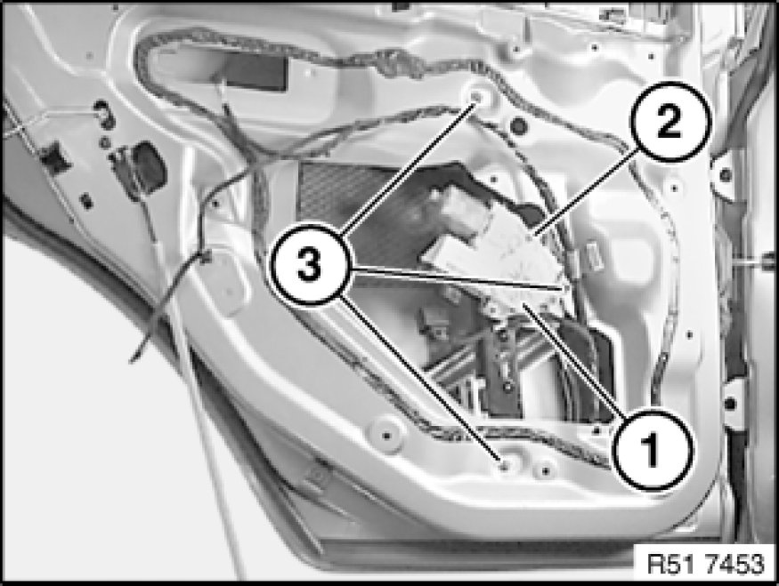
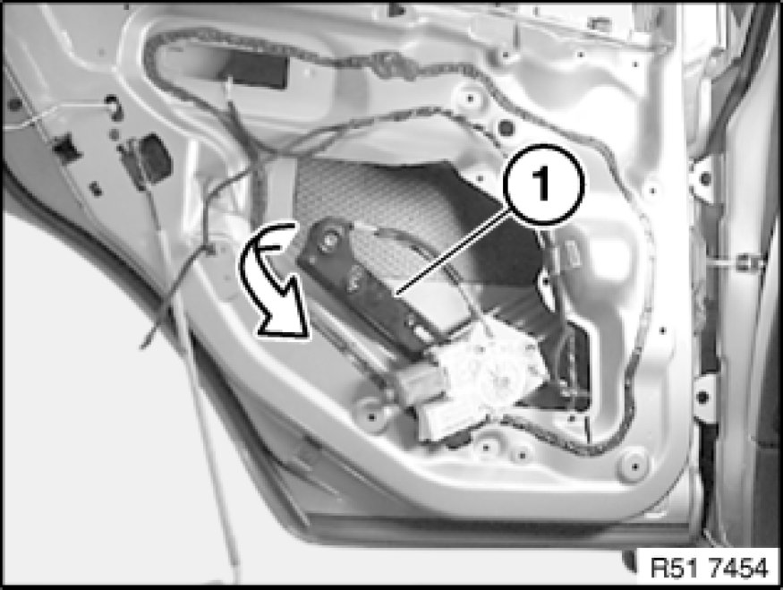

51 37 000 Removing and Installing/Replacing Complete Rear Left or Right Power Window Unit
51 37 000 - Removing and installing/replacing complete rear left or right power window unit

Necessary preliminary tasks:
- Remove rear door window glass Replacing Rear Left or Right Door Window

Unclip cable holder (1) from power window motor (2).
Unscrew nuts (3).
Tightening torque 51 35 2AZ [1][2]Rear Door Window Motor.

Feed power window unit (1) in direction of arrow out of rear door.
Replacement:
Remove flat motor 67 62 020 Removing and Installing/Replacing Flat Motor For Rear Left or Right Power Window Unit